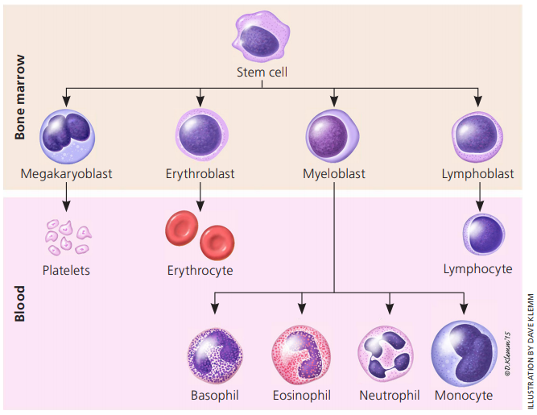

Laboratory Test
Check these websites
HematologyLink
Hematology is the study of blood and blood disorders to help in the diagnosis, treatment, and prevention of diseases of the blood and bone marrow as well as of the immunologic, hemostatic (blood clotting) and vascular systems. Because of the nature of blood, the science of hematology profoundly affects the understanding of many diseases.
All our blood cells develop from stem cells in the bone marrow. Stem cells are blood cells at the earliest stage of development and they stay inside the bone marrow until they are fully developed which is when they go into the bloodstream. Blood cells do not live long. The bone marrow normally makes millions of new blood cells every day to replace blood cells as they are needed.
The three main types of blood cells are:
-
Red blood cells (RBC) or erythrocytes are the most common type of blood cells. They lack a cell nucleus and most organelles, in order to accommodate maximum space for hemoglobin; they can be viewed as sacks of hemoglobin, with a plasma membrane as the sack.
- Hemoglobin (HGB) is an iron-containing biomolecule that can bind oxygen and is responsible for the red color of the cells and the blood.
- The hematocrit (HCT), is the volume percentage of red blood cells in blood.
-
Platelets (PLAT) or thrombocytes help the blood to clot and prevent bleeding and bruising.
- White blood cells (WBC) or leucocytes fight and prevent infection.
- Basophils (BASO)
- Eosinophils (EOS)
- Neutrophils (NEUT)
- Monocytes (MONO)
- Lymphocytes (LYM)

Normal Ranges' Rule of ThumbLink
| Type of blood cell | Unit | Levels |
|---|---|---|
| Red blood cells (RBC) | g/l | Men: 130-180, Women: 115-165 |
| Hematocrit (HCT) | % | Men: 41-50, Women: 36-44 |
| Hemoglobin (HGB) | g/l | Men: 13.5-16.5, Women: 12.0-15.0 |
| Platelets | 10^9/L | 150-400 |
| White blood cells | 10^9/L | 4.0-11.0 |
| Neutrophils | 10^9/L | 2.0-7.5 |
| Lymphocytes | 10^9/L | 1.5-4.5 |
Check these websites
Blood-Related AnomaliesLink
- Neutrophil-to-Lymphocyte Ratio (NLR), defined as absolute neutrophils count divided by absolute lymphocytes count, has been reported as poor prognostic factor in several neoplastic diseases. In the case of colorectal cancer, elevated pre-operative ($NLR>5$) is associated with poorer long-term survival. NLR is a useful biomarker in delineating those patients with poorer prognosis and whom may benefit from adjuvant therapies.
- Leucocytosis, often defined as an elevated white blood cell (WBC) count greater than $11000/mm^3$ ($11.0 \cdot 10^9/L$) in nonpregnant adults, is a relatively common finding with a wide differential. It is important for clinicians to be able to distinguish malignant from nonmalignant etiologies, and to differentiate between the most common nonmalignant causes of leukocytosis. Leukocytosis in the range of approximately $50-100 \cdot 10^9/L$ is sometimes referred to as a leukemoid reaction. This level of elevation can occur in some severe infections, such as Clostridium difficile infection, sepsis, organ rejection, or in patients with solid tumors. Leukocytosis greater than $100 \cdot 10^9/L$ is almost always caused by leukemias or myeloproliferative disorders.
- An abnormally low hematocrit (as well as a decrease in the total amount of red blood cells or hemoglobin in the blood) may suggest anemia, a decrease in the total amount of red blood cells, while an abnormally high hematocrit is called polycythemia. Both are potentially life-threatening disorders.
- Thrombocythemia or thrombocytosis is the presence of high platelet counts in the blood. Although often symptomless, it can predispose to thrombosis in some patients. Thrombocytosis can be contrasted with thrombocytopenia, a loss of platelets in the blood.
ChemistryLink
Basic Metabolic Panel (BMP)Link
It usually contains 8 tests, all of which are found in the CMP (below); provides information about the current status of a person's kidneys and respiratory system as well as electrolyte and acid/base balance and level of blood glucose.
- Glucose: energy source for the body; a steady supply must be available for use, and a relatively constant level of glucose must be maintained in the blood. High levels of glucose can indicate the presence of diabetes or another endocrine disorder.
- Calcium ($Ca$): one of the most important minerals in the body; it is essential for the proper functioning of muscles, nerves, and the heart and is required in blood clotting and in the formation of bones.
ElectrolytesLink
- Sodium ($Na^+$) concentration in blood serum: Sodium is vital to normal body processes, including nerve and muscle function. The kidneys work to excrete any excess sodium that is ingested in food and beverages. Sodium levels fluctuate with dehydration or over-hydration, the food and beverages consumed, diarrhea, endocrine disorders, water retention (various causes), trauma and bleeding.
- Hyponatraemia: $Na_{serum}< 135 \: mmol/l$
- Hypernatraemia: $Na_{serum}> 150 \: mmol/l$
- Causes of sodium deficiency: renal/skin/intestinal losses
- Causes of sodium excess: decreased sodium excretion or excessive intake
- Potassium ($K^+$) concentration in blood serum: plays an important role in muscle contractions and cell function. Both high and low levels of potassium can cause problems with the rhythm of the heart so it is important to monitor the level of potassium after surgery. Patients who are taking diuretics regularly may require regular blood tests to monitor potassium levels, as some diuretics cause the kidneys to excrete too much potassium.
- Hypokalaemia: $K_{serum} < 3.5 \: mmol/l$
- Hyperkalaemia: $K_{serum} < 5.2 \: mmol/l$
- Carbon Dioxide ($CO_2$): Most carbon dioxide is present in the form of bicarbonate, which is regulated by the lungs and kidneys and helps to maintain the body's acid-base balance. The test result is an indication of how well the kidneys, and sometimes the lungs, are managing the bicarbonate level in the blood.
- Chloride ($Cl^-$) concentration in blood serum: Chloride binds with electrolytes including potassium and sodium in the blood and plays a role in maintaining the proper pH of the blood. Chloride levels can vary widely if the patient is dehydrated or overly hydrated, if the kidneys are not functioning properly. Heart failure and endocrine problems can also contribute to abnormal chloride results.
Kidney TestsLink
- Blood Urea Nitrogen (BUN): waste product filtered out of the blood by the kidneys; conditions that affect the kidney have the potential to affect the amount of urea in the blood. A high level may indicate that the kidneys are functioning less than normal.
- Creatinine: waste product generated by the body during the process of normal muscle breakdown; it is filtered out of the blood by the kidneys so blood levels are a good indication of how well the kidneys are working. High levels may indicate kidney impairment, low blood pressure, high blood pressure or another condition.
- Creatinine Clearance: The amount of blood filtered per minute by the kidneys is known as the glomerular filtration rate (GFR). If the kidneys are damaged or diseased, or if blood circulation is slowed, then less creatinine will be removed from the blood and released into the urine and the GFR will be decreased. GFR is difficult to measure directly. A way to estimate GFR is to calculate creatinine clearance. There are several versions of the creatinine clearance calculation. All of them include the measurement of the amount of creatinine in a blood sample collected just before or after the urine collection, the amount of creatinine in a 24-hour urine sample, and the 24-hour urine volume. Since the amount of creatinine produced depends on muscle mass, some calculations also use a correction factor that takes into account a person's body surface area.
Comprehensive Metabolic Panel (CMP)Link
It usually includes 14 tests; provides the same information as the BMP with the addition of the status of a person's liver and important blood proteins.
ProteinsLink
- Albumin: a small protein produced in the liver; the major protein in serum.
- Total protein (TP): the concentration of all fractions of plasma proteins (including albumin and several types of globulin).
- Hypoproteinaemia: total blood protein decrease below 65 g/l (life threatening when total protein concentration $< 40 g/l$ and albumin $< 20 g/l$
- Hyperproteinaemia: is an abnormal increase in serum and plasma proteins.

Liver TestsLink
- Aminotransferases: they catalyze the process of transamination and are present in every organ and tissue.
- АLТ/SGPT (ALanine amino Transferase/Serum Glutamic Pyruvic Transaminase): Highest concentration of ALT is noted in the liver cells. Increased ALT activity is most frequently revealed in acute liver and biliary ducts diseases.
- АSТ/SGOT (ASpartate amino Transferase/Serum Glutamic Oxaloacetic Transaminase): High concentration of AST is noted in heart and skeletal muscles, liver, kidneys, pancreas and erythrocytes. Damage of any of them leads to significant increase of AST in the blood serum. Increase in AST activity reveals hepatic pathology.Low AST activity usually reveals vitamin В6 deficiency, renal failure, pregnancy.
- Ritis ratio: AST/ALT ratio. Its normal value is around 1–1.3. It decreases in liver diseases and increases in heart diseases.
- Alkaline phosphatase (ALP): is produced by various tissues: intestinal mucous membrane, osteoblasts, biliary ducts, placenta and mammary gland during lactation. Bone (ALP increases with bone formation), liver (main indicator of biliary tract pathology), intestinal (small part of total ALP activity, may be increased by intestinal diseases accompanied by diarrhoea) and placental (appears in pregnancy during the 3rd trimester, increase in women with placenta damage) ones are the most significant for clinical and diagnostic purposes.
- Total Bilirubin: is an orange-yellow pigment, a waste product primarily produced by the normal breakdown of heme (component of hemoglobin found in RBCs) when aged red blood cells (RBCs) are recycled. Bilirubin is ultimately processed by the liver to allow its elimination from the body. This test measures the amount of bilirubin in the blood to evaluate a person's liver function or to help diagnose anemias caused by RBC destruction (hemolytic anemia).
Electrolyte PanelLink
It is helpful for detecting a problem with the body's fluid and electrolyte balance. Electrolytes are minerals that are found in body tissues and blood in the form of dissolved salts. As electrically charged particles, electrolytes help move nutrients into and wastes out of the body's cells, maintain a healthy water balance, and help stabilize the body's acid/base (pH) level.
In the first instance pH is maintained by physiological buffers. Buffers may be intracellular and extracellular. Different buffer systems work in correlation with one another. It means that changes in one buffer system lead to changes in another.
The main buffer systems are the following:
- Bicarbonate buffer (53% buffering capacity): the most important extracellular buffer, produced by kidneys.
- Haemoglobin buffer (35% buffering capacity): main intracellular buffer of the blood.
- Protein buffer (7% buffering capacity): is an extracellular buffer represented by plasma proteins.
-
Phosphate buffer (5% buffering capacity): takes part in hydrogen ions excretion in renal tubules, is not of great importance in blood.
-
If blood pH increases, $H^+$ ions move from cells to extracellular fluid in exchange of $K$ ions that enter the cells. That's why alkalosis is usually accompanied by hypokalaemia.
- If blood pH decreases, $H^+$ ions enter the cells in exchange of $K$ ions that leaves the cells. That's why acidosis may cause hyperkalaemia.
The electrolyte panel measures the blood levels of the main electrolytes in the body: sodium (Na+), potassium (K+), chloride (Cl-), and bicarbonate (HCO3-; sometimes reported as total CO2), which are included in the BMP.
Lipid PanelLink
Also known as coronary risk panel, measures the level of specific lipids in blood to help assess someone's risk of cardiovascular disease (CVD).
- Total Cholesterol: The cholesterol forms the membranes for cells in all organs and tissues in the body. It is used to make hormones that are essential for development, growth, and reproduction. It forms bile acids that are needed to absorb nutrients from food. The test for cholesterol measures total cholesterol that is carried in the blood by lipoproteins.
- Triglycerides: They are a form of fat and a major source of energy for the body. Most triglycerides are found in fat (adipose) tissue, but some triglycerides circulate in the blood to provide fuel for muscles to work. Most triglycerides are carried in the blood by lipoproteins called very low-density lipoproteins (VLDL). High levels of triglycerides in the blood are associated with an increased risk of developing cardiovascular disease (CVD). Certain factors can contribute to high triglyceride levels and to risk of CVD, including lack of exercise, being overweight, smoking cigarettes, consuming excess alcohol, and having medical conditions such as diabetes and kidney disease.
A small amount of cholesterol circulates in the blood in complex particles called lipoproteins. Each particle contains a combination of protein, cholesterol, triglyceride, and phospholipid molecules and the particles are classified by their density into:
- High-density lipoprotein cholesterol (HDL-C): often called good cholesterol because it removes excess cholesterol and carries it to the liver for removal.
- Low-density lipoprotein cholesterol (LDL-C): often called bad cholesterol because it deposits excess cholesterol in walls of blood vessels, which can contribute to atherosclerosis.
Liver PanelLink
Also called Hepatic Function Panel, it is used to screen for, detect, evaluate, and monitor actue and chronic liver inflammation (hepatitis), liver disease and/or damage. Along with the Liver tests from the CMP, others are contained in this panel:
The CMP includes most of the liver panel tests (ALT, ALP, AST, bilirubin, albumin, total protein). Depending on the healthcare provider and the laboratory, other tests that may be included in a liver panel are:
- Gamma-Glutamyl Transpeptidase (GGT): an increased activity has a great significance in diagnosis of any pathology of liver and bile ducts. The liver is considered as the main source of normal serum activity, despite the fact that the kidney has the highest level of the enzyme. Pancreas also contains GGT (100% of patients with acute pancreatitis show GGT activity 10-20 times higher than normal). If GGT activity is normal, liver disease probability is very low. Thus, GGT is a good marker for differential diagnosis of liver pathology. The most significant increase is observed in cholestasis. Determination of GGT in urine allows to diagnose the early stages of kidney disease, which is accompanied by proximal renal tubular damage.
- Lactate Dehydrogenase (LDH): is an enzyme involved in energy production that is found in almost all of the body's cells, with the highest levels found in the cells of the heart, liver, muscles, kidneys, lungs, and in blood cells; bacteria also produce LDH. Only a small amount of LDH is usually detectable in serum or plasma. LDH is released from the cells into the serum when cells are damaged or destroyed. Thus, an LDH blood level is a non-specific marker for the presence of tissue damage somewhere in the body. By itself, it cannot be used to identify the underlying cause or location of the cellular damage. However, it may be used, in conjunction with other blood tests, to help evaluate for and/or monitor conditions that lead to tissue damage, such as liver or blood diseases or cancer.
- Prothrombin Time (PT): the liver produces proteins involved in the clotting (coagulation) of blood; the PT measures clotting function and, if abnormal, may indicate liver damage. A PT measures the number of seconds it takes for a clot to form in a person's sample of blood after substances are added.
- International Normalized Ratio (INR): is a calculation based on results of a PT that is used to monitor individuals who are being treated with the blood-thinning medication (anticoagulant) warfarin. The INR is a calculation that adjusts for changes in the PT reagents and allows for results from different laboratories to be compared.
Renal PanelLink
Also called Kidney Function Panel, it contains tests such as albumin, creatinine, BUN, eGFR to evaluate kidney function.
The individual tests included in a renal panel can vary by laboratory, but the tests typically performed include: electrolytes, minerals (phosporus and calcium), protein (albumin), waste products (BUN, creatinine) and sugar (glucose).
- Phosphorous ($P$): is a mineral that combines with other substances to form organic and inorganic phosphate compounds. Phosphates are vital for energy production, muscle and nerve function, and bone growth. They also play an important role as a buffer, helping to maintain the body's acid-base balance. Most of the body's phosphates combine with calcium to help form bones and teeth. Smaller amounts are found in muscle and nerve tissue. The rest is found within cells throughout the body, where they are mainly used to store energy.
- Hypophosphatemia may be seen with malnutrition, malabsorption, acid-base imbalances, increased blood calcium, and with disorders that affect kidney function.
- Hypophosphatemia may be seen with increased intake of the mineral, low blood calcium, and with kidney dysfunction.
Thyroid Function PanelLink
This panel helps in evaluating thyroid gland function and diagnosing thyroid disorders.
Other tests (???)Link
-
Magnesium ($Mg$): is a mineral that is vital for energy production, muscle contraction, nerve function, and the maintenance of strong bones. This test is used to evaluate the level of magnesium in your blood and to help determine the cause of abnormal levels of magnesium, calcium and/or potassium.
- Hypomagnesemia: may be seen with malnutrition, conditions that cause malabsorption, and with excess loss of magnesium by the kidneys.
- Hypermagnesemia: may be seen with the ingestion of antacids that contain magnesium and with decreased ability of the kidneys to excrete magnesium.
-
HbA1c: Hemoglobin A1c, also called A1c or glycated hemoglobin, is hemoglobin with glucose attached. The A1c test evaluates the average amount of glucose in the blood over the last 2 to 3 months by measuring the percentage of glycated (glycosylated) hemoglobin. There are several types of normal hemoglobin, but the predominant form – about 95-98% – is hemoglobin A. As glucose circulates in the blood, some of it spontaneously binds to hemoglobin A. Once the glucose binds to the hemoglobin, it remains there for the life of the red blood cell – normally about 120 days. The predominant form of glycated hemoglobin is referred to as A1c. This test may be used to screen for and diagnose diabetes or risk of developing diabetes.
-
Uric acid: is produced by the breakdown of purines. Purines are nitrogen-containing compounds found in the cells of the body, including our DNA. As cells get old and die, they break down, releasing purines into the blood. If too much uric acid is produced or not enough is removed, it can accumulate in the body, causing increased levels in the blood (hyperuricemia). The presence of excess uric acid can cause gout, a condition characterized by inflammation of the joints due to the formation of uric acid crystals in the joint (synovial) fluid. Excess uric acid can also be deposited in tissues such as the kidney, leading to kidney stones or kidney failure.
Normal Ranges' Rule of ThumbLink
https://www.verywellhealth.com/blood-chemistry-tests-and-results-3156998
| Type of test | Unit | Levels |
|---|---|---|
| Glucose | $mmol/l$ | 3.9-5.6 |
| Calcium | ||
| Serum Sodium | $mmol/l$ | 3.5-5 |
| Serum Potassium | $mmol/l$ | 3.5-5 |
| Carbon Dioxide (bicarbonate) | $mmol/l$ | 24-30 |
| Serum Chloride | $mmol/l$ | 100-106 |
| Blood Urea Nitrogen (BUN) | $mmol/l$ | 2.9-8.9 |
| Creatinine | $\mu mol/l$ | Men: 15-40; Women: 25-70 |
| Creatinine Clearance | ||
| Albumin | ||
| Total Protein (TP) | ||
| ALT/SGPT | ||
| AST/SGOT | ||
| ALP | ||
| Total Bilirubin | ||
| GGT | ||
| LDH | ||
| Prothrombin Time | ||
| INR | ||
| Phosphorous | ||
| Total Cholesterol | $mmol/l$ | <5.18 (high >6.22) |
| Triglycerides | $mmol/l$ | <1.7 (high >2.3) |
| HDL-C | $mmol/l$ | Men: 1.0-1.3; Women: 1.3-1.5 |
| LDL-C | $mmol/l$ | <2.59 (high >160) |
| Magnesium | ||
| HbA1c | ||
| Uric Acid |
UrinalysisLink
CoagulationLink
BiomarkersLink
- CEA (carcinoembryonic antigen) is a protein found in many types of cells but associated with tumors and the developing fetus. A common cutoff is $5 \mu g/L$ (values bigger than this could be a sign of disease).
- Mutations in KRAS exon 2, BRAF and PIK3CA are commonly present in colorectal cancer (CRC).